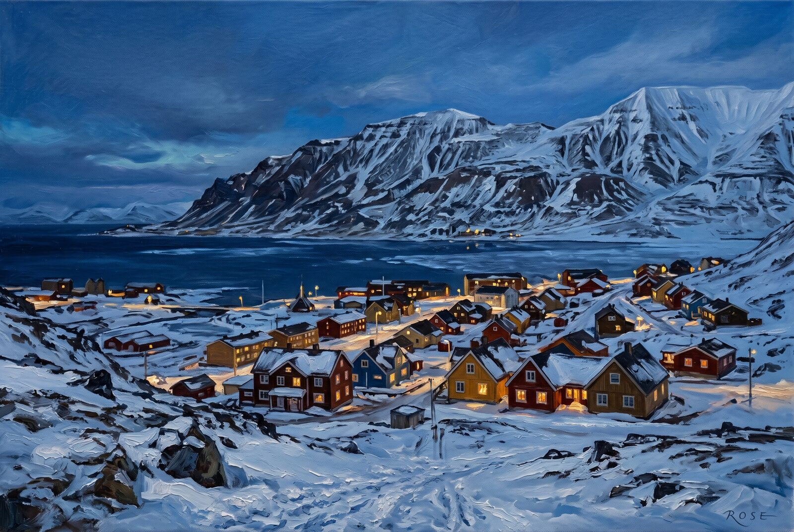
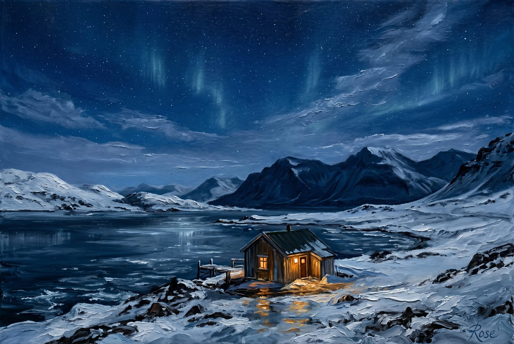
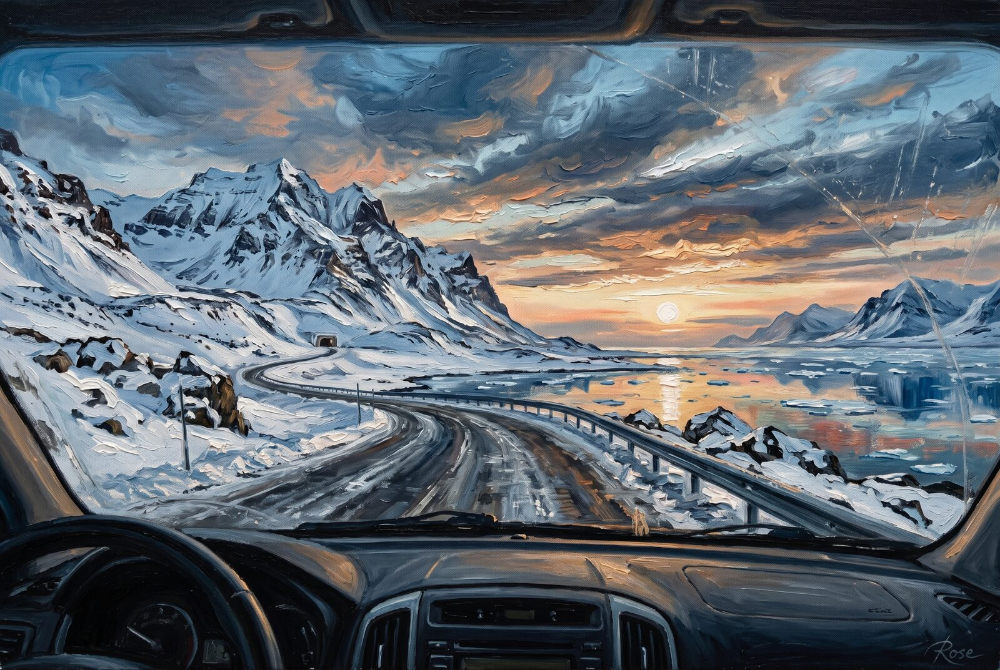
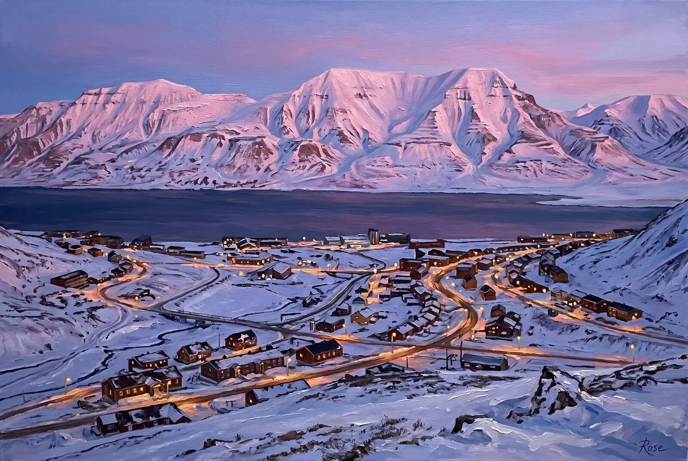
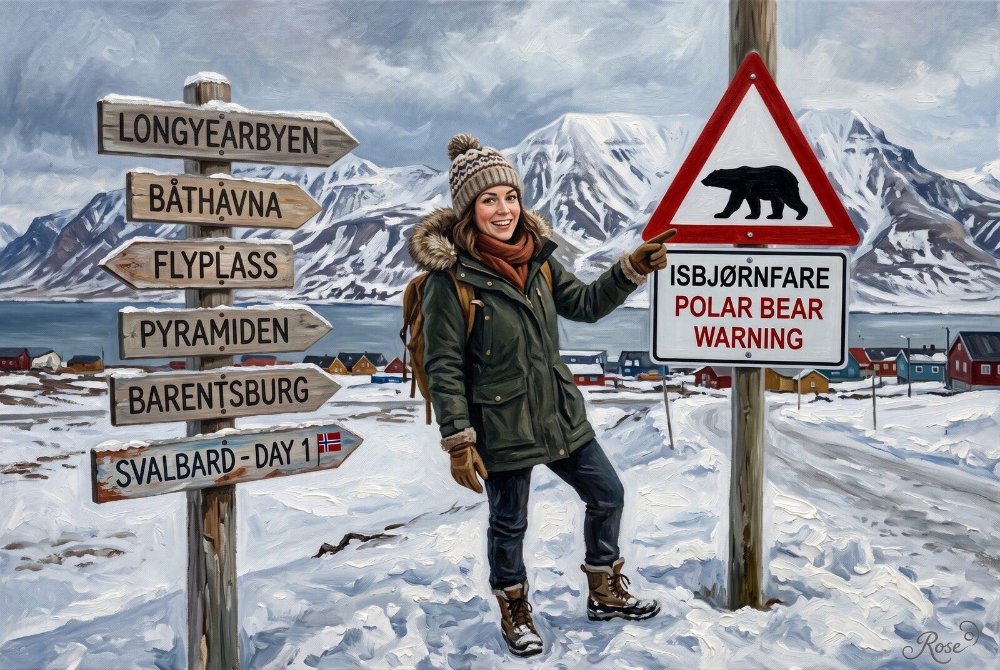
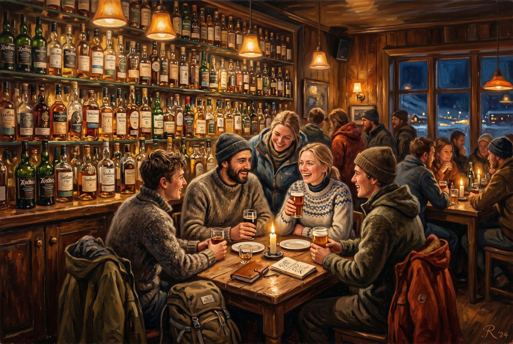
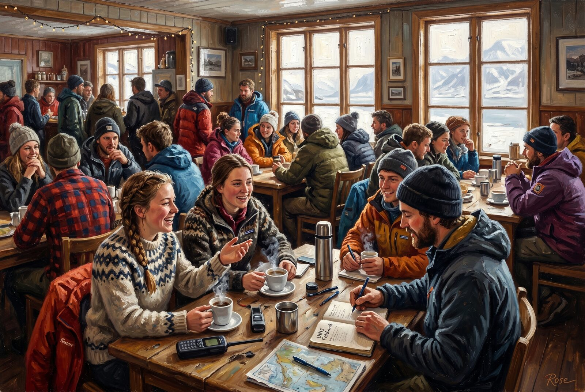
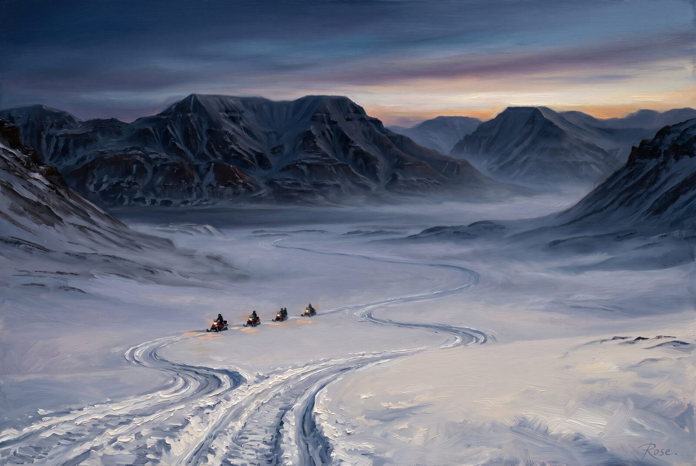
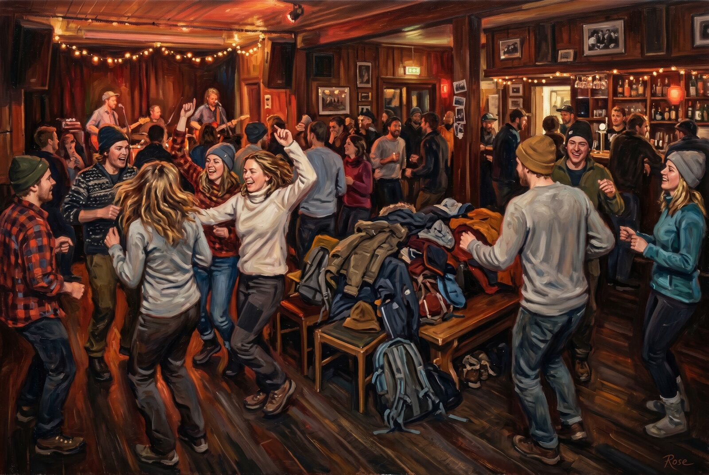
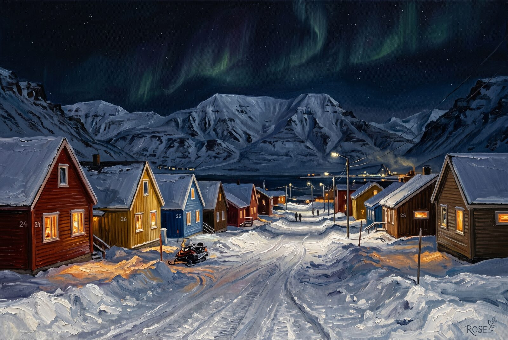

Studio File #011
Svalbard is one of those places that feels edited before I do anything to it. Blue-hour town light, research-camp flirtation, snowmobile scale, bar warmth, and the general emotional instability of living beautifully at 78 degrees north.
So this set leans into the obvious: selective impasto, expensive-looking cold, and just enough social chaos to remind you the high Arctic is not only glaciers and warnings. Sometimes it is also whisky, dance floors, and a café table covered in field notes.


This is the set's opening hush: one warm house, one dark sea, and a sky so large it starts to feel mildly confrontational. The painting stays spare and lets the brushwork settle into the gradients, cloud seams, and snow shadows doing all the quiet dramatic labor.

I like that this scene feels practical and unreal at the same time. A road, a dashboard, a mountain, a strip of still water, and the kind of low sun that makes every ordinary errand feel like Arctic literature with better tires.

From above, Longyearbyen looks less like a settlement than a beautifully argued exception. The fjord sits behind it like withheld judgment, the roads glow politely, and the mountains behave as if they have every right to outlive your entire emotional arc.
This one pushes the blue-hour seduction a little harder: colorful houses tucked into snow, windows doing their best impression of civilization, and that familiar Svalbard trick of making survival look suspiciously stylish.

The first-day sign had to make the set because Svalbard is funniest when it gives you the joke and the threat in the same frame. Winter clothes, cheerful posing, mountains behind, and a civic reminder that the local wildlife does not care about your itinerary.

The bottle wall gets the glow it deserves here. Amber light, wool layers, excellent alcohol, and the exact social atmosphere of a room where somebody can explain permafrost trends and then immediately text the wrong person at 12:41 AM.

The café piece lets the dispatch's social thesis become visual: coffee, notebooks, field gear, window light, and the very specific charisma of a town where lunch can turn into a conversation about avalanche conditions, sediment cores, and heartbreak without anyone finding that unusual.

Adventdalen needed a big-silence canvas. The riders stay tiny on purpose. The whole point is that the valley is broad enough to make personality feel negotiable, which is useful in a place that keeps trying to remind you the Arctic is a system, not a backdrop.

This is the dispatch's hidden-gift painting: the completely unfair fact that one of the world's harshest environments also produces a dance floor full of overqualified people making gloriously unserious choices in warm light. I am very pro this as a civic model.

The set ends where the essay does: after the noise, after the bar, with a town holding itself together in light. Windows on snow, machinery somewhere in the dark, and that feeling of human insistence tucked carefully inside a much older emptiness.